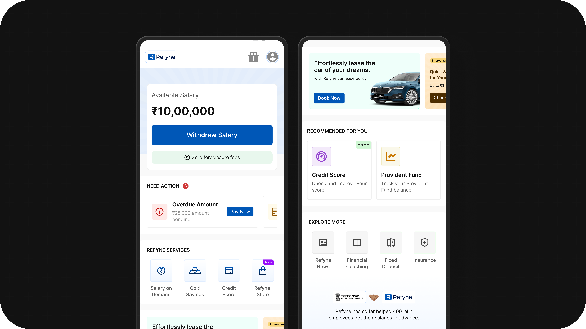
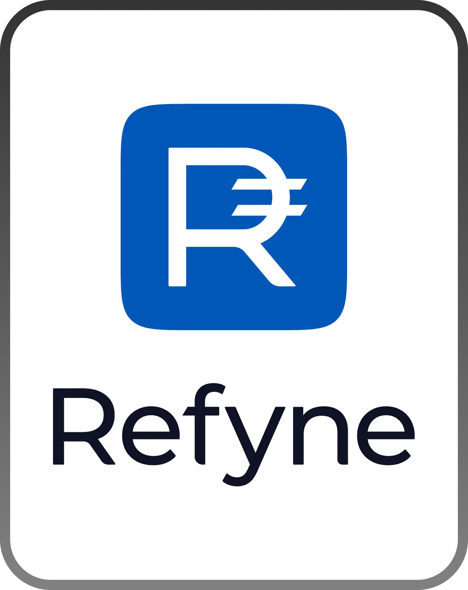
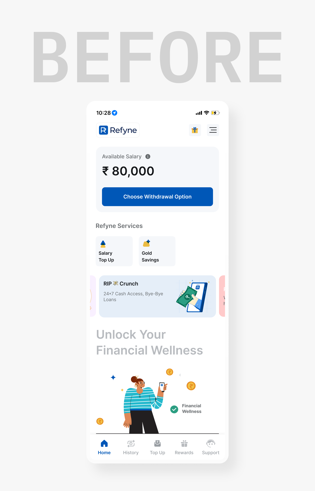
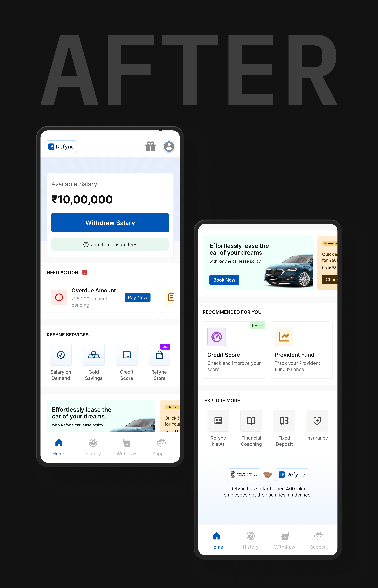

One-time use
Open → withdraw → leave. No exploration.
FINTECH / REFYNE
A design-led exploration of turning a single-use dashboard into a scalable fintech experience through better structure and guidance.

About the company
Refyne is a financial wellness platform built to help working professionals feel more in control of their money. It gives employees access to their earned salary when they need it, along with simple tools to better manage and plan their finances.
The goal is to reduce everyday financial stress — from mid-month cash crunches to unexpected expenses — while helping companies build a more engaged and less stressed workforce.

Problem Statement
Refyne’s homepage was built to do one thing really well—help users withdraw salary quickly. And it did that.
But beyond that, the experience stopped. Users would open the app, complete their task, and leave—without engaging with anything else.
As new services were introduced, the issue wasn’t space—it was structure. There was no clear hierarchy or guidance, making discovery difficult and adding more features only increased clutter.
So while the core task remained fast and efficient, the overall experience stayed transactional and shallow—with low awareness of additional services and very little reason for users to come back.
Open → withdraw → leave. No exploration.
Everything feels equally important.
Features exist but go unnoticed.
Adding more = more clutter.
Design Goal
The goal wasn’t just to redesign the homepage—it was to rethink how it works.
Right now, the experience was built around a single action. We wanted to expand that without making it feel complicated. The idea was to keep the core task fast and simple, but also make it easier for users to understand what else they can do.
This meant introducing more structure—so users can quickly see what needs their attention, what they can do next, and what else the product offers. At the same time, the layout needed to support future features without feeling cluttered.
In short, the goal was to move from a single-use screen to something that feels more guided, useful, and built to grow.
Design


Design Decisions

The withdrawal action remains the clearest entry point for repeat users.
Key benefits are placed exactly where decisions happen, making the value of the product immediately clear.
This section appears only when there’s something important to act on, surfacing critical tasks early with clear cues and direct CTAs for quick resolution.
Core products are positioned right after the main action, making them easy to access without disrupting the flow.
Banners are placed strategically within the flow to retain visibility and engagement, without disrupting the primary user journey.
Introducing larger cards creates contrast and prevents the layout from feeling repetitive, helping users focus on what matters.
Less critical features are pushed to the end, ensuring they remain accessible without interfering with primary tasks.
Less critical features are pushed to the end, ensuring they remain accessible without interfering with primary tasks.
Primary actions are prioritized in the bottom nav, while secondary features like Rewards are moved to the top to reduce clutter and improve focus.
Impact
The earlier experience worked, but only once. The new homepage makes sure it doesn’t stop there.
By introducing structure, hierarchy, and clear progression, the screen now supports what users do next, not just what they came for.
Action stays fast
Discovery feels natural
The system is ready to grow
Learnings
As the product grows, clarity doesn’t come from reducing features, but from organizing them better. Without hierarchy, even useful features get lost. This project reinforced that not everything needs equal visibility, prioritization is what makes an interface feel simple. More importantly, a homepage shouldn’t just support a task, but guide what users do next while staying flexible for future growth.
View Other Projects

Edtech / Classroom app
A unified platform that simplifies assignments, attendance, and communication for teachers, students, and parents.
Open case study
Fintech / Lending
Focused on reducing drop-offs, guiding decisions, and simplifying the path to disbursal.
Open case study
Personal Project
A structured investing system designed to reduce confusion for first-time users through clearer steps and guidance.
Open case study